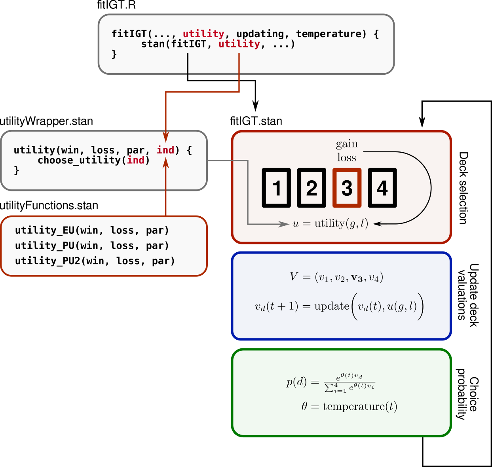

Adding new models
Corson N. Areshenkoff
2024-07-27
customizing_models.RmdAdding new model components (e.g. new utility functions) involves two broad steps:
- Making the component available to RStan, which is responsible for all model simulation and fitting.
- Updating iowa’s internal information about the model component, including parameter names, bounds, etc.
Although the actual process of adding a new component is slightly tedious, the ultimate goal is that, once added, the new component can be used with all package functions (and combined with all other components) with a minimum of thought or fuss.
Internal package structure
The general structure of the package is as follows:
- The wrapper functions
simulateIGT()andfitIGT()provide a high-level interface to the underlying stan code, which implements the model fitting and simulation procedures. -
.stanfiles implement the general model. - The actual component functions (e.g. the specific utility function)
are passed internally as data to the stan model, which are then imported
from a separate
.stanfile. These separate files are stored ininst/stan/include, with the names e.g.utilityFunctions.stan.
For example, inst/stan/fitIGT.stan – which is
responsible for model fitting – specifies a general model as
follows:
// Likelihood
for (t in 1:NUM_TRIALS){
// Compute temperature
theta = temperature(t, temperature_params, TEMPERATURE_FUNCTION);
// Draw card
choice[t] ~ categorical_logit(theta * V);
// Compute utility
U = utility(win[t], loss[t], utility_params, UTILITY_FUNCTION);
// Update deck values
V = updating(V, U, choice[t], updating_params, UPDATING_FUNCTION);
}On trial t, the utility of the outcome is evaluated
through the function
utility(win[t], loss[t], utility_params, UTILITY_FUNCTION);where utility is imported from
inst/stan/include/utilityWrapper.stan, and is defined
by
real utility(real win, real loss, real[] par, int ind){
if (ind == 1){
return utility_EU(win, loss, par);
} else if (ind == 2){
return utility_PU(win, loss, par);
} else if (ind == 3){
return utility_PU2(win, loss, par);
} else {
return 0;
}
}Note that this function is just a general wrapper that calls one of
several utility functions depending on the integer argument
ind. In turn, all utility functions are defined in
inst/stan/include/utilityFunctions.stan.
As an example, the EU and PU utility are defined by:
// EU utility function (used in EV model)
real utility_EU(real win, real loss, real[] par) {
return (1-par[1]) * win - par[1] * loss;
}
// Prospect utility function
real utility_PU(real win, real loss, real[] par) {
real net = win - loss;
if (net >= 0){
return pow(net, par[1]);
} else {
return -par[2] * pow(fabs(net), par[1]);
}
}Note an important point: All utility functions have exactly
the same signature; that is
real win, real loss, real[] par.
When the user specifies a utility function as an argument to
something like fitIGT(), the package first loads a
modelDetails object contained in
R/sysdata.rda. This structure is a nested list containing
information about each model component; such as its required parameters,
and any necessary (or default) bounds.
The structure of this list is as follows:
modelDetails
. utility
. . EU
. . . w
. . . . bounds = c(0,1)
. . . . default_bounds = c(0, 1)
. . . . description = "Win/loss weighting"
. . PU
. . . A
. . . . bounds = c(0, Inf)
. . . . default_bounds = c(0, 1)
. . . . description = "Concavity of utility function"
. . . L
. . . . bounds = c(0, Inf)
. . . . default_bounds = c(0, 5)
. . . . description = "Loss aversion"
<break>
. updating
. . DRL
. . . d
. . . . bounds = c(0, 1)
. . . . default_bounds = c(0, 1)
. . . . description = "Decay parameter"That is, it has fields utility, updating,
and temperature; each of which is a named list with fields
corresponding to each included function. Each of these fields in turn
has a field for each parameter, which then contains entries giving
parameter bounds (outside of which the package will throw an error), as
well as default bounds used for model fitting if the user does not
specify their own.
Note that the order of utility functions in this list corresponds to
the order in which they are called in utilityWrapper.stan.
Thus, when the user specifies utility = 'PU', the package
matches this to the second utility function in
modelDetails, passes the argument 2 as data to
Stan, which passes it to utility(), which in turn calls
utility_PU().
The general structure of the R/Stan program is illustrated below, using the utility function as an example:

Implementing a new model component
Adding a new utility function to iowa now involves the following steps:
- Add the function to
inst/stan/include/utilityFunctions.stan, making sure that it matches the required signature. - Add a new
ifstatement toinst/stan/include/utilityWrapper.stan, corresponding to the next highest value ofind. - Add a new field to
modelDetailsin theutilityfield – named with the unique keyword of the new utility function – and populate it with the necessary fields (i.e. one subfield for each parameter, each with the required fieldsboundsanddefault_bounds). The position of this new field inmodelDetails$utilitymust correspond to the value ofindwhich calls the new utility function in step (2). - Resave
modelDetailstoR/sysdata.rdausingsave(modelDetails, file = 'R/sysdata.rda').
After the package is recompiled, the new utility function should be ready for use.
The steps for adding new updating or temperature functions are essentially identical, mutatis mutandis.